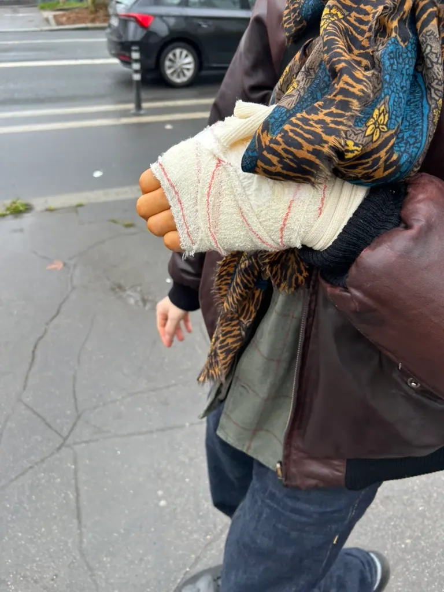

Ce que l'hôpital fait aux corps et aux identités dans la crise du soin
Pour la première fois de ma vie, j'ai subi une opération chirurgicale. Quelques jours plus tôt, je pavanais encore sur les pistes avec une main pourtant meurtrie. Je m'efforçais jusqu'au bout d'appliquer avec un dogmatisme stoïcien, une maîtrise de soi, tandis que mon corps aboyait le supplice nerveux. Il fallut que je me rende à l'évidence, je ne pourrais pas longtemps résister à cette épreuve par une sorte de force physique forcément amoindrie.
Dès lors, la douleur n'était plus une simple représentation conforme à l'ordre des choses, non, elle m'expulsait de ma "norme vitale", elle disposait désormais de tout mon corps. Après quelques examens infructueux, le diagnostic tombe : "rupture du ligament collatéral ulnaire du pouce" - Il faut opérer, il n'y a pas le choix, me lance ce jeune chirurgien à l'allure svelte, et au timbre de voix sévère indistinctement causé par un léger tabagisme ou bien par l'occupation pleine et entière de sa fonction. L'ascèse émotionnelle fait partie intégrante de la déontologie médicale. Le métier relève en effet d'une rationalité scientifique ne laisse que peu ou pas de place à l'affectuel. Pourtant, le soignant vit dans le corps à corps avec le malade une expérience émotionnelle intense; car le patient sait qu'il est ramené au déséquilibre de son intégrité physique, il est perçu comme un être marginal, presque tabou parce qu'il échappe à la représentation rationnelle du bon fonctionnement anatomique. Le médecin est donc intercalé dans deux rationalités : celle, d'une part, du paradigme scientifique; la maladie est une entorse à l'état normal, elle institue de nouvelles "normes de vie" qui redimensionnent notre quotidien et d'autre part, une pensée symbolique. Le patient est un individu temporairement hyper-affecté, son corps est dérangé, son esprit contaminé par l'angoisse d'une norme de vie considérablement réduite. Celui qui souffre suscite la compassion et le désir de le soulager de sa douleur. Cette deuxième rationalité soulève une question majeure pour la médecine : à quel point le patient est suffisamment malade pour recevoir un accompagnement émotionnel ?
Tandis que j'encaissais le coup, le chirurgien s'affairait avec le plus grand zèle pour apporter un semblant d'humanisme face à une opération ordinaire, sans grand risque.
- Avez-vous des questions ? Je suis là pour y répondre.
- Oui docteur, combien de temps ça dure ? Je ne vais rien sentir ? L'incision est-elle grande ? Vais-je retrouver une mobilité totale de mon pouce gauche ?
- C'est une opération assez simple, très saisonnière. On l'appelle d'ailleurs dans le jargon médical, le "pouce du skieur". Je pratiquerai une légère incision sur la partie intérieure du pouce, comme ça (il trace une ligne au stylo sur la base de mon pouce). Je placerai ensuite une petite ancre en titane à l'extrémité du ligament touché pour qu'il puisse plus se déloger. Le tout en une demi-heure maximum. Vous porterez ensuite une attelle sur mesure pendant cinq semaines. Il vous suffira ensuite de pratiquer quelques séances de kinésithérapie pour résorber la raideur du membre, causée par son immobilisation… temps… Ne vous inquiétez pas, ça va bien se passer.
Je ne pouvais, dans l'immédiat, qu'être inquiété. Il fallut pourtant que j'intègre aussi à mon tour la rationalité médicale : je suis pris en charge pour être soigné qui plus est par un spécialiste de la main. Ça va bien se passer.
Je suis admis le surlendemain à l'hôpital dès 8h00. Après avoir difficilement enfilé des vêtements stériles, je tentai encore de résister aux procédures hospitalières lorsqu'on me sommait de porter (aussi) la charlotte. Autour de moi, des hommes et des femmes le plus souvent âgés. Je ressentis une forme de légère injustice, pourquoi faut-il que je sois ici, moi, jeune, dans la fleur de l'âge qu'ils disent. Soudain, mon nom retentit. C'est parti. Je fus approché par un infirmier qui préparait minutieusement le brancard sur lequel je serai dorénavant transporté.
- Vous savez monsieur je peux marcher, lançai-je dans un élan de fierté masculine. L'infirmier, hermétique, se contenta de m'indiquer là où je devais m'allonger. Cette première étape de l'opération fut éprouvée comme une humiliation corporelle : le patient est d'emblée ramené à son invalidité partielle (ou totale pour l'institution hospitalière), elle est brutalement conscientisée. Car le patient opéré, hospitalisé ou interné n'est plus qu'une commodité, un corps de plus à soigner. L'anonymisation est certes partielle, notre identité est réduite à un nom et à la raison de notre présence à l'hôpital. En l'occurrence, la chirurgie construit une relation au soin particulière : si elle se manifeste par une attitude autour de l'attention de la douleur du patient, elle instaure inévitablement un paradigme technicisant, censé atténuer la douleur et à fortiori, réparer. D'ailleurs, l'environnement est conçu pour stériliser notre rapport au monde : le monde social n'est plus ou presque. Il est diminué, rationalisé pour participer du bon fonctionnement hospitalier. Car l'hôpital est une machine biologique, elle débarrasse le patient des bactéries symboliques cramponnées à lui lorsqu'il fait son entrée dans cet univers. Tout y concourt. L'architecture elle-même participe de cette entreprise de désorientation : couleurs ternes ou faussement apaisantes, codes chromatiques incompréhensibles, faux plafonds qui écrasent le regard, couloirs sans fin, chambres interchangeables où rien ne permet de s'ancrer. Aucun lieu n'est vraiment habitable. Ce huis clos médical est en fait hanté par la présence d'autres instances. Celle de la gestion, du temps compté, d'une rentabilité silencieuse. Ici, le soin ne s'exerce pas dans la douceur, plutôt dans l'efficacité. Chaque geste est précis, indiscutable. Dès lors, il n'y a pas de place pour l'hésitation ni pour l'affect : l'émotion serait un parasite, une défaillance du protocole. Car le corps médical ne peut pas se permettre de sentir, les affects sont trop colorés et trop hasardeux; il doit se départir des émotions, comme on retire ses bijoux avant d'entrer au bloc opératoire. Cette procédure ne découle pas d'une faute morale, elle est bien une nécessité structurelle. Cependant, cette neutralisation affective a un coût : elle transforme le patient en surface d'intervention, en problème localisé, il est un tout organique "problématisé ".

Le bloc stérile : là où les corps deviennent lisibles comme des problèmes à résoudre.
Avant de pénétrer au bloc opératoire, mon moi-brancardisé fait halte dans une anti-chambre, la salle de l'anesthésie. L'angoisse du patient est ici déjà comptabilisée au protocole : un ordinateur grésille une musique "zen" trouvée sur Youtube. Je suis désormais dépouillé de mon corps propre. Merleau-Ponty montre que le corps propre se distingue du corps-objet en ce qu'il est le lieu d'une perception vécue, d'une chair qui n'est jamais simple matière mais condition même de notre rapport au monde. Or, l'anesthésie met ce corps propre entre parenthèses. Il ne souffre pas, mais ne perçoit plus non plus, ankylosé par les drogues (légales). Ma conscience corporelle est suspendue, et avec elle la possibilité d'une expérience vécue. À cet instant précis, mon corps cesse d'être le mien au sens phénoménologique. Il devient un corps physique parmi d'autres, un support biologique entièrement disponible pour l'intervention technique. Le monde n'apparaît plus à travers lui ; il sera désormais traité depuis l'extérieur.
Tout s'enchaîne ensuite très vite, mon bras gauche inerte est posé sur table en métal, il est machinalement frotté et désinfecté à l'iode par les assistants. Un drap bleu est dressé entre moi et mon bras, comme s'il était symboliquement amputé de moi-même. Soudain, le chirurgien fait son entrée en scène, un grand chaman enjoué couvert de la tête aux pieds - Alors comment vous allez Monsieur Ferret ? Prêt ? Pas trop stressé?J'élude la dernière question, inutile de s'appesantir sur mon anxiété - Evidemment que je suis stressé docteur, vous allez m'ouvrir la main, pensai-je.
Nous sommes spécialistes des pathologies de la main et du membre supérieur
Le bras a beau dormir, je sens qu'on me triture à coups de scalpel, qu'on gratte le fond de ma chair; c'est la guerre à ma gauche. Je jette un coup d'oeil à droite, le "scope" (moniteur cardiaque) bipe à intervalles réguliers, au rythme de mes battements du coeur. Dans une volonté urgente de distraction, je décide de faire joujou avec; j'essaie de conscientiser mes battements pour faire réagir mon jouet. Ça bipe plus fort. C'est drôle. Je découvre avec un enthousiasme niais, que je peux encore agir sur quelque chose - non plus sur mon corps, mais sur son indicateur. Je n'habite plus mon corps, mais son signal. Le vivant se déplace : il n'est plus dans la chair droguée, il est dans le bip qui le trahit. Le chirurgien, concentré, ne me regarde plus. Il regarde ailleurs, à l'intérieur. Moi, je regarde le bip. Nous sommes, à ce moment-là, deux attentions parallèles, coordonnées par la même opération, mais radicalement dissociées. Lui travaille sur un organe, moi je m'accroche à un modeste rythme.

Le paysage clinique : moniteurs, bips et réduction de la vie à des signaux mesurables.
- Voilà c'est fini jeune homme ! S'exclame le chirurgien. Je vous ai mis un bandage rigide temporaire, le temps qu'on vous fabrique votre attelle, ajoute t-il.
Je suis rapidement évacué par un infirmier. L'opération aura duré vingt-cinq minutes en tout et pour tout. La fin est proche, pensai-je. Seulement, il faut transiter par la salle de réveil. Or, la salle de réveil n'est pas conçue pour un patient conscient, absolument pas. Je suis placé au milieu de cette grande chambre, désormais maladroitement courbé sur une chaise roulante. Autour de moi, des corps inertes sommeillent mollement. La plupart ont la bouche ouverte, certains écument leur salive sur leurs robes de chambre. Des électrodes sont branchées sur leur peau comme pour récolter leur énergie bioélectrique et la conserver. Dans une confusion soudaine, je pense au film Matrix, ces guerriers opérés et encore drogués sont cultivés par des machines; leur esprit est apaisé par une réalité simulée : ils sommeillent paisiblement et ne se doutent probablement pas qu'ils ne sont pas chez eux, dans leur lit douillet. Voilà la matrice hospitalière; les infirmiers sont ces héros qui débranchent les corps asservis. Ces derniers naviguent entre les lits, administrent quelque substance aux patients, s'enquièrent du dossier médical de chacun : tour à tour - jeune patient masculin, trentaine, opéré sous anesthésie générale pour fissure anale. Femme septuagénaire, opérée pour hernie discale.
Le corps réparé : suturé et bandé, attendant que le sens soit cousue à nouveau.
Je ris légèrement, non pas parce que le dossier médical des autres m'amuse (peut-être aussi un peu) mais parce que je suis une entorse au protocole médical : je suis éveillé, conscient de ce qu'il se passe; je suis en mesure de briser le secret médical, je renversais le "quatrième mur" hospitalier, les infirmiers s'adressent aussi à moi. Je relativise sur mon cas, je me tranquilise. Cet espace me déprime forcément; car je n'ai rien à faire ici, personne ne devrait être ici d'ailleurs ! Passons, tandis que je commençai à trépigner, je fus sorti de ce tunnel par un énième soignant. Une collation me fut offerte, une sorte de récompense pour bonne conduite, soldat. À cet instant précis, j'ai juste envie de me casser, une infirmière me baragouine quelques indications pour la cicatrisation de la plaie, j'hoche de la tête sans vraiment trop vouloir comprendre. Je pense à mon espresso brûlé au zinc du coin, délivrez-moi.
- Vous avez un accompagnant ? me demande doucereusement l'infirmière
- Oui. ( Peut-être. Je ne sais pas. De toute façon ça va. Je peux marcher. )
Je compris rapidement à ma sortie que l'environnement hospitalier n'est pas toujours conscient de la violence qu'elle entretient. La maladie, la douleur, l'opération est une blessure de l'identité, elle conduit à se poser la question : qui suis-je dorénavant ? qu'est-ce que le moi social ? Le malade peut devenir un individu de seconde zone, invisibilisé, un être usé systématiquement ramené à sa blessure. Car la société transparaît toujours dans les définitions du blessé et du sain; comme le démontre Georges Canguilhem, la maladie redéfinit les contours du normal et du pathologique. Canguilhelm soutient que la maladie est autre allure de la vie. Pour tout organisme, il y a des valeurs positives qu'il recherche et des valeurs négatives qu'il repousse; telle est la normativité vitale. De là se dégage l'idée centrale de l'essai Le normal et le pathologique (1966) : la vie est normative et celle-ci ne peut pas être pensée sans norme. L'homme normatif est celui toujours capable de créer des normes et le pathologique n'est pas une absence de norme, mais une restriction de la normativité (c'est à dire la capacité à créer, instituer de nouvelles normes), une norme de vie moins souple. Ainsi, l'hôpital soigne en fragmentant. Il isole la pathologie du vécu, la lésion de l'histoire, la douleur de celui qui la ressent. Il faut que le monde disparaisse pour que le corps devienne lisible. Alors on stérilise, on désinfecte, on simplifie. Le réel est trop complexe pour le soin : il faut le réduire. Ce n'est pas une violence spectaculaire, mais une violence administrative, polie. Une violence nécessaire — et pourtant violence quand même. La recherche contemporaine confirme que ce n'est pas une perception isolée, mais un phénomène structurel. Des études en sciences sociales ont identifié ce qu'on appelle la déshumanisation en médecine : des pratiques et processus par lesquels les patients sont traités comme des objets ou des entités abstraites plutôt que comme des sujets dotés de dignité, d'histoire et de sens propre — un mécanisme qui découle de routines cliniques, de la réduction de l'empathie, de la mécanisation des soins ou encore de la perte d'agency du patient dans sa propre trajectoire de soin.
Une revue intégrative récente montre que la déshumanisation dans les soins se manifeste à plusieurs niveaux — du traitement relationnel aux représentations sociales du corps malade — et qu'elle est étudiée comme un phénomène psychosocial systémique, pas comme une simple erreur individuelle. La déshumanisation n'est pas seulement conceptuelle : elle est vécue par les soignants eux-mêmes, de manière peut-être encore plus violente. Il se sentent moins "humains" aussi par le traitement qu'ils subissent par les patients et par une organisation qui les place face à des manques et des ruptures dans la continuité des soins. Cinq ans après le pic de la pandémie de Covid-19, Le Monde a recontacté une vingtaine de soignants qui, en 2020, avaient tenu un « journal de crise des blouses blanches » pour raconter, de l'intérieur, la gestion de l'hôpital en pleine catastrophe sanitaire. Aujourd'hui, ces mêmes professionnels témoignent d'une désillusion profonde : ils ne se sentent pas davantage considérés qu'au moment où ils affrontaient la pénurie de moyens, la surcharge de travail et l'urgence permanente. Beaucoup ont changé de service ou quitté l'hôpital, et ceux qui restent décrivent une souffrance persistante, une reconnaissance publique qui s'est érodée et un système toujours tendu malgré les promesses de réformes. Mathilde Padilla, 26 ans, infirmière en réanimation à l'Hôpital américain, raconte avoir été projetée en première ligne dès sa formation, lors de la crise du Covid-19. Étudiante infirmière en Normandie en 2020, elle est successivement affectée en Ehpad puis en renfort dans un hôpital intercommunal, faute de personnel. « Les apprenants ont été en première ligne », dit-elle.
Très tôt, elle est confrontée à la mort répétée, aux familles brisées, aux collègues infectés puis hospitalisés, à l'épuisement généralisé. Elle décrit une entrée brutale dans le soin, sans médiation, sans protection symbolique. Il ne s'agissait pas d'apprendre à soigner, mais de tenir. De remplacer. De persévérer. Cette exposition précoce à la catastrophe a forgé, dit-elle, sa manière d'être infirmière — une manière façonnée par l'urgence, la répétition, et l'impuissance face à l'ampleur des pertes.
L'hôpital ne se contente pas de soigner, il met à l'épreuve les corps et les subjectivités. Ceux qui étaient applaudis deviennent des acteurs usés et invisibilisés, renvoyés à leurs pratiques quotidiennes sans que la reconnaissance institutionnelle ou sociale ne suive. Selon les chiffres de l'Observatoire national des violences en milieu de santé (ONVS), près de 20 000 signalements de violences sont recensés chaque année dans les établissements de santé, ce qui représente environ 30 000 atteintes aux personnes et 5 000 atteintes aux biens ; parmi ces agressions, plus de 80 % des victimes sont des professionnels de santé eux-mêmes : aides-soignants, infirmiers, médecins, exposés à des injures, des menaces ou des violences physiques régulières dans le cadre de leur travail. Plus encore, près de 37 % des personnels hospitaliers déclarent subir des agressions physiques de façon récurrente, chiffre qui atteint 84 % pour les aides-soignants, selon un baromètre réalisé en 2022.
Cette violence institutionnelle s'inscrit dans un contexte plus large, où le rapport au corps, à la souffrance et à l'autorité médicale est lui-même tendu, parfois conflictuel.
L'hôpital n'est donc pas un lieu déshumanisé : il est un lieu où l'humanité est strictement rationnée. Elle circule à flux tendu, comme les lits, comme le personnel, et comme le temps. On y soigne des corps fragmentés, réparés — Le reste, l'expérience vécue, l'identité blessée, l'émotion débordante, devra attendre.
En sortant de l'hôpital, mon pouce était réparé. Réparé par la blessure. Réparé par une "vulnérabilisation" complète du membre. Mon rapport à mon corps, change désormais de norme pour toujours, au moins pour cinq semaines. Les ligaments sont recollés, la plaie recousue; il me revenait désormais de recoudre un sens à mon corps — du moins, pour l'instant. Mon espresso et ma sèche m'attendent.